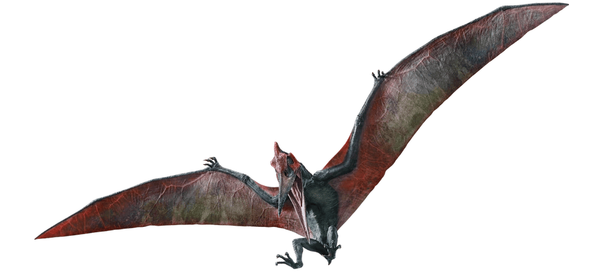

Historia de InGen
Fundada en 1975, InGen ha liderado la investigación genética, logrando la clonación de dinosaurios en 1993. Entre septiembre de 1983 y noviembre de 1985, John Hammond, un magnate de casi setenta años y titular de una institución de prestigio que otorga becas para el estudio llamada Fundación Hammond, junto con el abogado Donnald Gennaro consiguieron ochocientos setenta millones de dólares para la creación de InGen y así financiar la investigación genética sobre dinosaurios y traerlos de nuevo a la vida.
El proyecto fue realizado en secreto, diciendo al gobierno que estaban construyendo una reserva biológica. Pero comenzaron a aparecer nuevas especies de lagarto en Costa Rica que mordían a bebés y a ancianos, y la Agencia de Protección Ambiental de EE. UU. se empezó a preocupar.
En 1998, es adquirida por la compañía Masrani, quienes deciden, entre 2002 y 2004, rehacerse con el control de la isla Nublar, y construyen en la isla el parque temático Jurassic World, abierto al público, hasta el año 2015, tras después de 10 años de funcionamiento, crean un dinosaurio híbrido que finalmente escapa, y obliga a evacuar la isla.
Dinosaurios Clonados

Tyrannosaurus rex: El depredador más temible del Cretácico.
Velociraptor: Inteligente y rápido, un cazador letal.
Triceratops: Herbívoro con tres cuernos y una gran gola ósea.
Brachiosaurus: Un gigante pacífico de cuello largo.
Apatosaurus: Un sauropodo más pequeño y mediano que el Brachiosaurus.
Dilophosaurus: Un depredador venenoso por sus membranas.

Pteranodon: Un pterosaurio con pico de grulla con una envergadura de 7 metros.
Parasaurolophus: EL herbívoro más hermoso del Cretácico.
Brachiosaurus: Un depredador conocido como Toro Carnívoro.

Stegosaurus: Famoso por sus placas dorsales y su cola con púas.

Spinosaurus: El carnívoro más grande de todos los dinosaurios depredadores con su aleta dorsal.
Mosasaurus: Un reptil marino cabeza de cocodrilo y el más grande de los reptiles marinos prehistoricos.
Gallimimus: Un dinosaurio herbivoro parecido a un avestruz.
Dimorphodon: Un reptil volador raro con alas parecidas a las de un murcielago.
Compsognathus: El carnívoro más pequeño y letal.